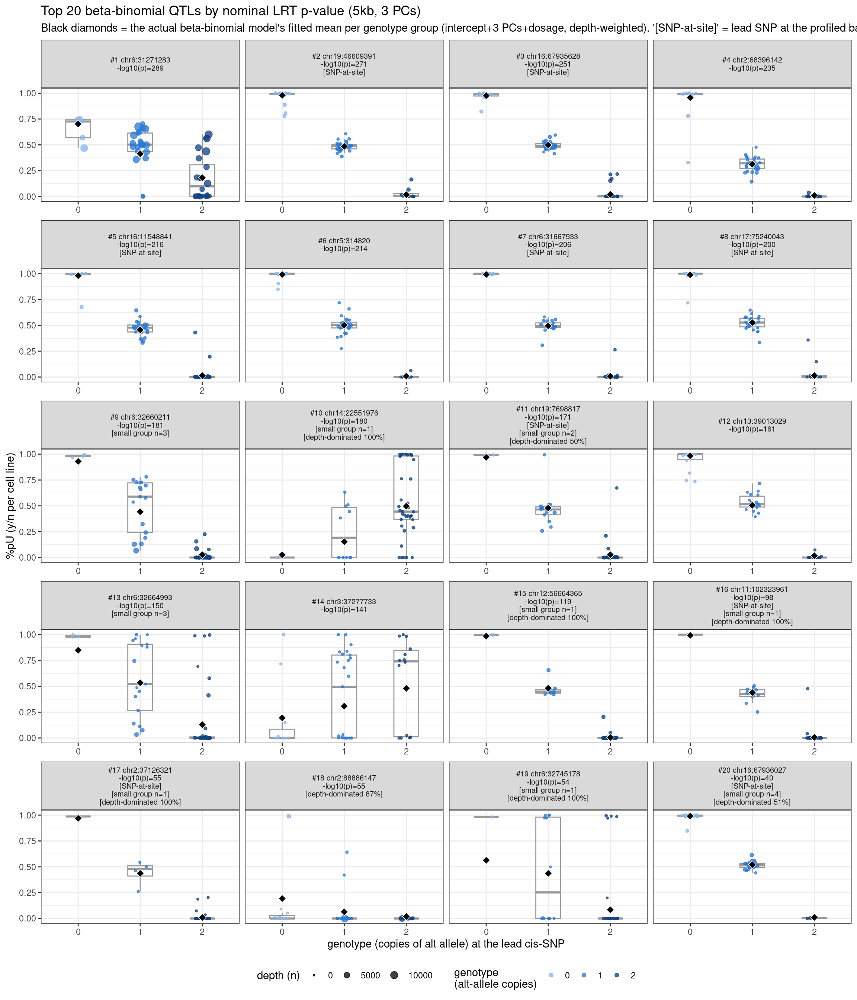
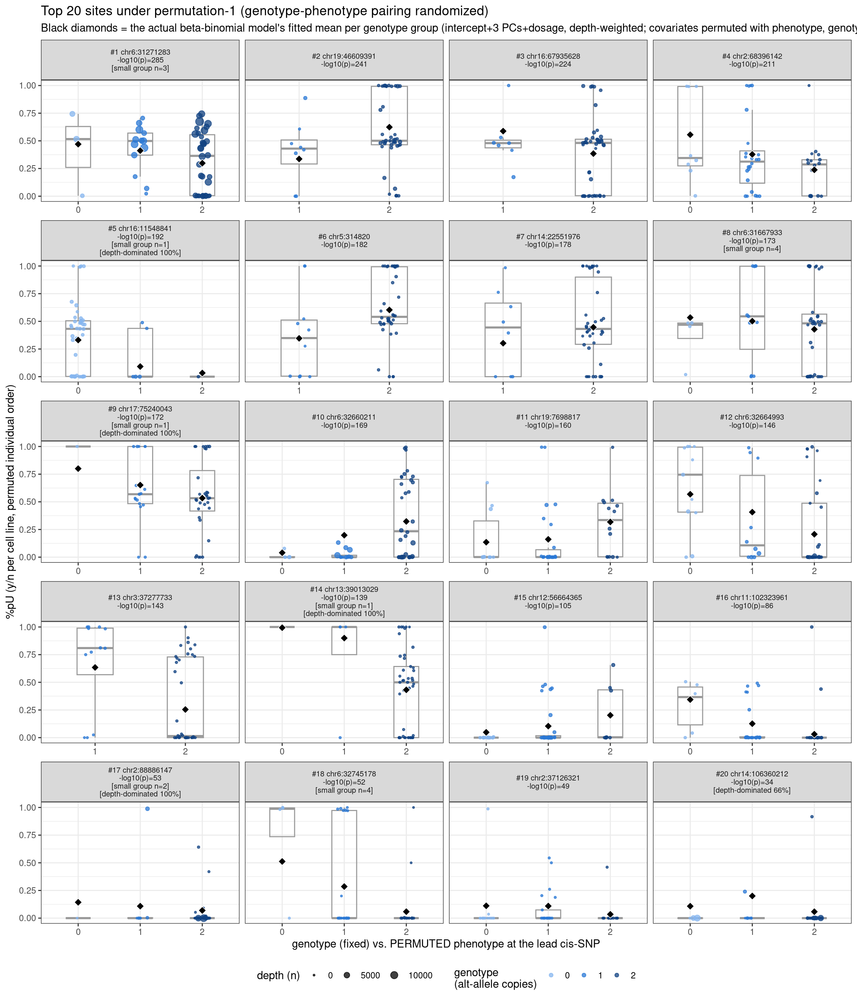
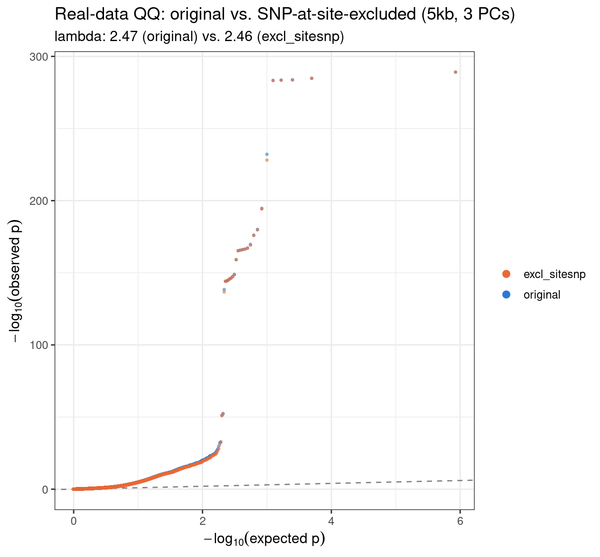

Last updated: 2026-08-01
Checks: 6 1
Knit directory: pumseq/
This reproducible R Markdown analysis was created with workflowr (version 1.7.0). The Checks tab describes the reproducibility checks that were applied when the results were created. The Past versions tab lists the development history.
The R Markdown file has unstaged changes. To know which version of
the R Markdown file created these results, you’ll want to first commit
it to the Git repo. If you’re still working on the analysis, you can
ignore this warning. When you’re finished, you can run
wflow_publish to commit the R Markdown file and build the
HTML.
Great job! The global environment was empty. Objects defined in the global environment can affect the analysis in your R Markdown file in unknown ways. For reproduciblity it’s best to always run the code in an empty environment.
The command set.seed(20260202) was run prior to running
the code in the R Markdown file. Setting a seed ensures that any results
that rely on randomness, e.g. subsampling or permutations, are
reproducible.
Great job! Recording the operating system, R version, and package versions is critical for reproducibility.
Nice! There were no cached chunks for this analysis, so you can be confident that you successfully produced the results during this run.
Great job! Using relative paths to the files within your workflowr project makes it easier to run your code on other machines.
Great! You are using Git for version control. Tracking code development and connecting the code version to the results is critical for reproducibility.
The results in this page were generated with repository version dadc1db. See the Past versions tab to see a history of the changes made to the R Markdown and HTML files.
Note that you need to be careful to ensure that all relevant files for
the analysis have been committed to Git prior to generating the results
(you can use wflow_publish or
wflow_git_commit). workflowr only checks the R Markdown
file, but you know if there are other scripts or data files that it
depends on. Below is the status of the Git repository when the results
were generated:
Ignored files:
Ignored: analysis/qtl_mapping_summary_cache/
Unstaged changes:
Modified: analysis/qtl_mapping_betabinomial_diagnostic.Rmd
Note that any generated files, e.g. HTML, png, CSS, etc., are not included in this status report because it is ok for generated content to have uncommitted changes.
These are the previous versions of the repository in which changes were
made to the R Markdown
(analysis/qtl_mapping_betabinomial_diagnostic.Rmd) and HTML
(docs/qtl_mapping_betabinomial_diagnostic.html) files. If
you’ve configured a remote Git repository (see
?wflow_git_remote), click on the hyperlinks in the table
below to view the files as they were in that past version.
| File | Version | Author | Date | Message |
|---|---|---|---|---|
| Rmd | dadc1db | XSun | 2026-08-01 | update |
| html | dadc1db | XSun | 2026-08-01 | update |
| Rmd | 2986ae4 | XSun | 2026-08-01 | update |
| html | 2986ae4 | XSun | 2026-08-01 | update |
| Rmd | abaae4e | XSun | 2026-08-01 | update |
| html | abaae4e | XSun | 2026-08-01 | update |
| Rmd | 1867d97 | XSun | 2026-08-01 | update |
| html | 1867d97 | XSun | 2026-08-01 | update |
| Rmd | 1ba19a8 | XSun | 2026-08-01 | update |
| html | 1ba19a8 | XSun | 2026-08-01 | update |
| Rmd | c836d6a | XSun | 2026-08-01 | update |
| html | 686a4a8 | XSun | 2026-07-31 | update |
| Rmd | 4fa878a | XSun | 2026-07-31 | update |
| html | 4fa878a | XSun | 2026-07-31 | update |
| Rmd | caa9602 | XSun | 2026-07-31 | update |
| html | caa9602 | XSun | 2026-07-31 | update |
suppressMessages({ library(data.table); library(ggplot2) })
knitr::opts_chunk$set(
echo = TRUE, warning = FALSE, message = FALSE,
fig.align = "center", fig.width = 12, fig.height = 14
)
PROJECT_DIR <- "/project/xinhe/xsun/pumseq"
BASE <- file.path(PROJECT_DIR, "pumseq_processed/psi_qtl")
BBR <- file.path(BASE, "qtl_betabinomial/lrt_results_merged")
CALIB <- file.path(BASE, "qtl_betabinomial/lrt_calibration")
COUNTS <- file.path(BASE, "phenotype/fold5_union/counts")
PSAM <- file.path(BASE, "genotype/plink2/pumseq_genotype.hg38.chr1-22.psam")
TRAW <- file.path(BASE, "genotype/qtl_binomial/genotype_common.traw")
WINDOW_KB <- 5
NPCS <- 3
N_TOP <- 20
MIN_GRP <- 5 # flag threshold for "small genotype group" in the pattern summary below
DEPTH_SHARE_THRESH <- 0.5 # flag threshold: one cell line contributing > this share of its genotype group's total depthA number of sites reach implausibly small p-values
(-log10(p) > 100) given the small sample size (50 cell
lines).
We pick a few top hits and plot %pU by genotype directly to build intuition for what’s driving them.
This page does that for the beta-binomial LRT model at its best-performing config (5kb window, 3 PCs) — the top 20 sites by nominal (pre-permutation-correction) LRT p-value.
Two candidate artifacts motivated this check:
Why depth drives this: the beta-binomial’s variance for cell line \(i\) is
\[ y_i \sim \text{BetaBinomial}(n_i, \mu_i, \phi), \qquad \text{Var}(y_i) = n_i\,\mu_i(1-\mu_i)\left[1 + (n_i - 1)\phi\right], \]
so its effective weight in the fit (inverse-variance) is approximately
\[ w_i \;\propto\; \frac{n_i}{1 + (n_i - 1)\phi} \;\xrightarrow[n_i \to \infty]{}\; \frac{1}{\phi}. \]
Weight grows with depth \(n_i\) but saturates at \(1/\phi\) — with a small \(\phi\) (as at these sites), that ceiling is high, so one high-depth cell line can still outweigh dozens of low-depth ones.
For each site, lead_pos is the position of the most
associated cis-SNP. When lead_pos == pos (the site’s own
genomic position), the “QTL” SNP is sitting exactly on top of the
profiled base.
d <- fread(file.path(BBR, sprintf("scan_lrt_w%dkb_pc%d.txt.gz", WINDOW_KB, NPCS)))
d[, snp_at_site := lead_pos == pos]
sig <- d[fdr < 0.05]
tbl <- data.table(
group = c("All tested sites", "Significant (FDR<0.05)"),
n = c(nrow(d), nrow(sig)),
n_snp_at_site = c(sum(d$snp_at_site, na.rm = TRUE), sum(sig$snp_at_site, na.rm = TRUE))
)
tbl[, pct_snp_at_site := round(100 * n_snp_at_site / n, 1)]
knitr::kable(tbl, caption = sprintf(
"SNP-at-site rate: baseline vs. significant hits (beta-binomial, %dkb, %d PCs)",
WINDOW_KB, NPCS))| group | n | n_snp_at_site | pct_snp_at_site |
|---|---|---|---|
| All tested sites | 11112 | 531 | 4.8 |
| Significant (FDR<0.05) | 1360 | 520 | 38.2 |
The SNP-at-site rate is 38.2% among significant hits vs. a 4.8% baseline among all tested sites — an 8x enrichment. This alone means a large share of current significant calls at this config are sites where the tested variant overlaps the profiled base itself, not a genuine cis-regulatory effect.
Each panel below marks a black diamond per genotype group: the
group’s depth-weighted average of the actual beta-binomial
model’s fitted mean (same design as the real scan — intercept +
3 M-value PCs + genotype dosage — refit here with
fit_bb_mle()), not just a visual summary of the raw
scatter. An earlier version of this page used a simpler proxy
(sum(y)/sum(n) per group, ignoring the PC covariates and
dispersion correction); checking that proxy against this true fit
directly showed agreement at low-dispersion sites but a gap of up to
~0.13 in probability at higher-phi sites, so the actual
model fit is shown here instead.
source(file.path(PROJECT_DIR, "4.qtl_mapping_betabinomial/betabin_lib.R"))
COVAR <- file.path(BASE, "phenotype/fold5_union/mvalue_pcs.txt")
C <- fread(file.path(COUNTS, "C_matrix.txt.gz")); N <- fread(file.path(COUNTS, "N_matrix.txt.gz"))
psam <- fread(PSAM); go <- psam[[2]]
Cm <- as.matrix(C[, ..go]); Nm <- as.matrix(N[, ..go])
sites <- C[, .(ref = as.character(ref), pos = as.integer(pos))]
cov <- fread(COVAR); stopifnot(identical(cov$sample, go))
Xcov <- cbind(Intercept = 1, as.matrix(cov[, paste0("PC", seq_len(NPCS)), with = FALSE])) # same design the actual scan uses
traw <- fread(TRAW); samp <- paste0(go, "_", go)
Gall <- t(as.matrix(traw[, ..samp])); gid <- traw$SNPtop20 <- d[order(nominal_min_p)][1:N_TOP]
top20[, rank := .I]
rows <- rbindlist(lapply(seq_len(nrow(top20)), function(i) {
s <- top20[i]
si <- which(sites$ref == as.character(s$ref) & sites$pos == s$pos)
gi <- which(gid == s$lead_snp)
y <- Cm[si, ]; n <- Nm[si, ]; g <- Gall[, gi]
pi_v <- y / n
grp_tab <- table(g)
min_grp <- min(grp_tab)
# depth concentration: share of a genotype group's total read depth coming
# from its single highest-depth cell line -- this is the quantity that
# determines how much one cell line can dominate that group's fitted mean
# (sum(y)/sum(n), the MLE the GLM actually fits; see Section 3 discussion)
depth_share <- sapply(sort(unique(g)), function(gg) { ns <- n[g == gg]; max(ns) / sum(ns) })
max_depth_share <- max(depth_share)
flags <- paste0(
if (s$lead_pos == s$pos) "\n[SNP-at-site]" else "",
if (min_grp < MIN_GRP) sprintf("\n[small group n=%d]", min_grp) else "",
if (max_depth_share > DEPTH_SHARE_THRESH) sprintf("\n[depth-dominated %.0f%%]", 100 * max_depth_share) else ""
)
# true full-model fitted mean per individual (intercept + NPCS M-value PCs +
# genotype dosage -- the EXACT design the LRT scan itself uses), not a naive
# binomial-only proxy: checked directly (see prose below) that a simpler
# sum(y)/sum(n) per-group proxy can be off by up to ~0.13 in probability at
# higher-phi sites, since it ignores both the PC covariates and the
# dispersion correction that this fit applies
fit <- tryCatch(fit_bb_mle(y, n, cbind(Xcov, g = g)), error = function(e) NULL)
mu_fit <- if (!is.null(fit)) fit$mu0 else rep(NA_real_, length(y))
data.table(
rank = s$rank,
site_lab = sprintf("#%d chr%s:%.0f\n-log10(p)=%.0f%s",
s$rank, s$ref, s$pos, -log10(max(s$nominal_min_p, 1e-300)), flags),
g = factor(g, levels = 0:2), pi = pi_v, n = n, y = y, mu_fit = mu_fit,
snp_at_site = s$lead_pos == s$pos, min_grp = min_grp, max_depth_share = max_depth_share
)
}))
rows[, site_lab := factor(site_lab, levels = unique(site_lab[order(rank)]))]
# per-group depth-weighted average of the TRUE model-fitted mean (not the
# raw observed y/n) -- this is what actually enters the LRT's log-likelihood
dw_means <- rows[!is.na(mu_fit), .(dw_mean = sum(mu_fit * n) / sum(n)), by = .(site_lab, g)]
blue3 <- c(`0` = "#86b6ef", `1` = "#2a78d6", `2` = "#104281")
ggplot(rows, aes(x = g, y = pi, color = g)) +
geom_boxplot(aes(group = g), outlier.shape = NA, width = 0.4, color = "grey60", fill = NA) +
geom_jitter(aes(size = n), width = 0.12, alpha = 0.75) +
geom_point(data = dw_means, aes(x = g, y = dw_mean), inherit.aes = FALSE,
shape = 23, fill = "black", color = "white", size = 2.6, stroke = 0.4) +
scale_color_manual(values = blue3, name = "genotype\n(alt-allele copies)") +
scale_size_continuous(name = "depth (n)", range = c(0.6, 3.5)) +
facet_wrap(~ site_lab, scales = "free_x", ncol = 4) +
labs(x = "genotype (copies of alt allele) at the lead cis-SNP", y = "%pU (y/n per cell line)",
title = sprintf("Top %d beta-binomial QTLs by nominal LRT p-value (%dkb, %d PCs)",
N_TOP, WINDOW_KB, NPCS),
subtitle = "Black diamonds = the actual beta-binomial model's fitted mean per genotype group (intercept+3 PCs+dosage, depth-weighted). '[SNP-at-site]' = lead SNP at the profiled base; '[small group]' = smallest genotype class <5 cell lines; '[depth-dominated]' = one cell line >50% of its group's total depth.") +
theme_bw(base_size = 11) +
theme(legend.position = "bottom", strip.text = element_text(size = 7.5))
summ <- unique(rows[, .(rank, snp_at_site, min_grp, max_depth_share)])
summ[, category := fifelse(snp_at_site, "SNP at/on the modification site",
fifelse(min_grp < MIN_GRP, sprintf("Small genotype group (min class n<%d)", MIN_GRP),
fifelse(max_depth_share > DEPTH_SHARE_THRESH, "Depth-dominated (one cell line >50% of group depth)",
"Neither flag (plausible)")))]
knitr::kable(summ[order(rank)], caption = "Per-site flags among the top 20", digits = 2)| rank | snp_at_site | min_grp | max_depth_share | category |
|---|---|---|---|---|
| 1 | FALSE | 5 | 0.33 | Neither flag (plausible) |
| 2 | TRUE | 8 | 0.27 | SNP at/on the modification site |
| 3 | TRUE | 7 | 0.21 | SNP at/on the modification site |
| 4 | FALSE | 10 | 0.28 | Neither flag (plausible) |
| 5 | TRUE | 6 | 0.31 | SNP at/on the modification site |
| 6 | FALSE | 8 | 0.19 | Neither flag (plausible) |
| 7 | TRUE | 12 | 0.19 | SNP at/on the modification site |
| 8 | TRUE | 9 | 0.21 | SNP at/on the modification site |
| 9 | FALSE | 3 | 0.41 | Small genotype group (min class n<5) |
| 10 | FALSE | 1 | 1.00 | Small genotype group (min class n<5) |
| 11 | TRUE | 2 | 0.50 | SNP at/on the modification site |
| 12 | FALSE | 14 | 0.18 | Neither flag (plausible) |
| 13 | FALSE | 3 | 0.42 | Small genotype group (min class n<5) |
| 14 | FALSE | 11 | 0.33 | Neither flag (plausible) |
| 15 | FALSE | 1 | 1.00 | Small genotype group (min class n<5) |
| 16 | TRUE | 1 | 1.00 | SNP at/on the modification site |
| 17 | TRUE | 1 | 1.00 | SNP at/on the modification site |
| 18 | FALSE | 12 | 0.87 | Depth-dominated (one cell line >50% of group depth) |
| 19 | FALSE | 1 | 1.00 | Small genotype group (min class n<5) |
| 20 | TRUE | 4 | 0.51 | SNP at/on the modification site |
cat_tbl <- summ[, .N, by = category][order(-N)]
knitr::kable(cat_tbl, caption = "Category counts among the top 20")| category | N |
|---|---|
| SNP at/on the modification site | 9 |
| Neither flag (plausible) | 5 |
| Small genotype group (min class n<5) | 5 |
| Depth-dominated (one cell line >50% of group depth) | 1 |
Of the top 20 beta-binomial hits by nominal p-value, 9 have their lead SNP sitting exactly at the modification site itself, 5 more have a genotype class with fewer than 5 cell lines (and no SNP-at-site overlap), and 1 more have a single cell line contributing over half of its genotype group’s total read depth (and neither of the other two flags) — together accounting for 15/20 of the most extreme “hits” in this model.
Visually, nearly every panel above shows the same pattern: genotype 0 near %pU=1, genotype 1 near %pU=0.5, genotype 2 near %pU=0.
The %pU phenotype at many sites is not smoothly distributed — it’s often bimodal (a cell line reads close to 0 or close to 1, with little in between), which a single Beta-distributed mean per genotype group may not represent well. To test whether that alone (independent of any genotype effect, real or not) can produce these extreme statistics, we took ONE fixed permutation of the phenotype/covariates across the 50 cell lines (same permutation used as “perm1” in the LRT calibration check, genotype held fixed at each individual’s true value) and re-ran the same per-site nominal LRT scan
p1 <- fread(file.path(CALIB, sprintf("perm1_scan_w%dkb_pc%d.txt.gz", WINDOW_KB, NPCS)))
p1_top20 <- p1[order(nominal_min_p)][1:N_TOP]
p1_top20[, rank := .I]
real_top20_sites <- d[order(nominal_min_p)][1:N_TOP, .(ref, pos)]
overlap_n <- sum(paste(p1_top20$ref, p1_top20$pos) %in% paste(real_top20_sites$ref, real_top20_sites$pos))19/20 of the top sites under this random permutation
are the same sites as the real top 20 — with comparably extreme
nominal p-values (~1e-285 at the top) — despite the
genotype-phenotype pairing being completely scrambled.
m <- length(go)
set.seed(1001); ord <- sample.int(m) # identical seed to 5.calibration_check_lrt.R's perm1
rows_p1 <- rbindlist(lapply(seq_len(nrow(p1_top20)), function(i) {
s <- p1_top20[i]
si <- which(sites$ref == as.character(s$ref) & sites$pos == s$pos)
gi <- which(gid == s$lead_snp)
y <- Cm[si, ord]; n <- Nm[si, ord]; g <- Gall[, gi] # phenotype permuted, genotype fixed -- same pairing as the calibration check
Xp <- Xcov[ord, , drop = FALSE] # covariates travel WITH the permuted phenotype, same rule as the calibration check
pi_v <- y / n
grp_tab <- table(g)
min_grp <- min(grp_tab)
depth_share <- sapply(sort(unique(g)), function(gg) { ns <- n[g == gg]; max(ns) / sum(ns) })
max_depth_share <- max(depth_share)
flags <- paste0(
if (s$lead_pos == s$pos) "\n[SNP-at-site]" else "",
if (min_grp < MIN_GRP) sprintf("\n[small group n=%d]", min_grp) else "",
if (max_depth_share > DEPTH_SHARE_THRESH) sprintf("\n[depth-dominated %.0f%%]", 100 * max_depth_share) else ""
)
fit <- tryCatch(fit_bb_mle(y, n, cbind(Xp, g = g)), error = function(e) NULL)
mu_fit <- if (!is.null(fit)) fit$mu0 else rep(NA_real_, length(y))
data.table(
rank = s$rank,
site_lab = sprintf("#%d chr%s:%.0f\n-log10(p)=%.0f%s",
s$rank, s$ref, s$pos, -log10(max(s$nominal_min_p, 1e-300)), flags),
g = factor(g, levels = 0:2), pi = pi_v, n = n, y = y, mu_fit = mu_fit
)
}))
rows_p1[, site_lab := factor(site_lab, levels = unique(site_lab[order(rank)]))]
dw_means_p1 <- rows_p1[!is.na(mu_fit), .(dw_mean = sum(mu_fit * n) / sum(n)), by = .(site_lab, g)]
ggplot(rows_p1, aes(x = g, y = pi, color = g)) +
geom_boxplot(aes(group = g), outlier.shape = NA, width = 0.4, color = "grey60", fill = NA) +
geom_jitter(aes(size = n), width = 0.12, alpha = 0.75) +
geom_point(data = dw_means_p1, aes(x = g, y = dw_mean), inherit.aes = FALSE,
shape = 23, fill = "black", color = "white", size = 2.6, stroke = 0.4) +
scale_color_manual(values = blue3, name = "genotype\n(alt-allele copies)") +
scale_size_continuous(name = "depth (n)", range = c(0.6, 3.5)) +
facet_wrap(~ site_lab, scales = "free_x", ncol = 4) +
labs(x = "genotype (fixed) vs. PERMUTED phenotype at the lead cis-SNP",
y = "%pU (y/n per cell line, permuted individual order)",
title = sprintf("Top %d sites under permutation-1 (genotype-phenotype pairing randomized)", N_TOP),
subtitle = "Black diamonds = the actual beta-binomial model's fitted mean per genotype group (intercept+3 PCs+dosage, depth-weighted; covariates permuted with phenotype, genotype fixed). Same seed as the LRT calibration check's perm1 (set.seed(1001)).") +
theme_bw(base_size = 11) +
theme(legend.position = "bottom", strip.text = element_text(size = 7.5))
Unlike the real top-20 plot above, these panels show no clean separation between genotype groups — heavily overlapping, noisy scatter within each group. Yet the p-values are just as extreme, and the black diamonds (depth-weighted group means — the actual quantity the GLM fits, not just the raw scatter) often differ sharply between groups even when the scatter looks flat, because one high-depth cell line can single-handedly set a group’s mean. That rules out “the permutation got lucky and happened to look like a real effect” — instead, it means these specific sites produce enormous LRT statistics almost regardless of which grouping variable is tested, genotype or a completely unrelated random shuffle: with anywhere from a dozen to 900+ candidate cis-SNPs per site, some SNP’s genotype grouping will likely isolate a high-depth, divergent cell line into a small group purely by chance. Checking this directly: of the 19 sites shared between the real and permutation-1 top 20, 0 have the same lead SNP — confirming it’s a different candidate SNP “winning” each time, not one specific real association.
Given SNP-at-site is a real, confirmed artifact (Section 1), the
natural next question is whether removing it also fixes the
genomic-inflation problem (lambda) from the permutation
calibration check.
We reran the same 5-seed LRT calibration check
that drops any cis-SNP sitting
exactly on a site’s own position before computing nominal p-values, and
compared its lambda table against the original
(non-excluded) run.
CAL_ORIG <- fread(file.path(CALIB, "calib_lrt_w5kb_pc3_lambda.txt"))
CAL_EXCL <- fread(file.path(CALIB, "calib_lrt_w5kb_pc3_excl_sitesnp_lambda.txt"))
cmp <- merge(CAL_ORIG, CAL_EXCL, by = "dataset", suffixes = c("_original", "_excl_sitesnp"))
cmp <- cmp[match(c("real", paste0("perm", 1:5)), dataset)]
knitr::kable(cmp, digits = 3, caption = "Genomic-inflation lambda: original vs. SNP-at-site-excluded (5kb, 3 PCs)")| dataset | lambda_original | lambda_excl_sitesnp |
|---|---|---|
| real | 2.473 | 2.457 |
| perm1 | 1.195 | 1.195 |
| perm2 | 0.961 | 0.961 |
| perm3 | 1.102 | 1.102 |
| perm4 | 1.087 | 1.086 |
| perm5 | 1.034 | 1.034 |
qq_orig <- fread(file.path(CALIB, "calib_lrt_w5kb_pc3_qqdata.txt.gz"))[dataset == "real"]
qq_excl <- fread(file.path(CALIB, "calib_lrt_w5kb_pc3_excl_sitesnp_qqdata.txt.gz"))[dataset == "real"]
qq_cmp <- rbind(qq_orig[, .(expected, observed, version = "original")],
qq_excl[, .(expected, observed, version = "excl_sitesnp")])
ggplot(qq_cmp, aes(expected, observed, color = version)) +
geom_abline(slope = 1, intercept = 0, linetype = "dashed", color = "grey50") +
geom_point(size = 0.7, alpha = 0.5) +
scale_color_manual(values = c(original = "#2a78d6", excl_sitesnp = "#eb6834"), name = NULL) +
guides(color = guide_legend(override.aes = list(size = 2.5, alpha = 1))) +
labs(x = expression(-log[10]("expected p")), y = expression(-log[10]("observed p")),
title = "Real-data QQ: original vs. SNP-at-site-excluded (5kb, 3 PCs)",
subtitle = sprintf("lambda: %.2f (original) vs. %.2f (excl_sitesnp)",
CAL_ORIG[dataset == "real"]$lambda, CAL_EXCL[dataset == "real"]$lambda)) +
theme_bw(base_size = 12)
sessionInfo()R version 4.2.0 (2022-04-22)
Platform: x86_64-pc-linux-gnu (64-bit)
Running under: Red Hat Enterprise Linux 8.10 (Ootpa)
Matrix products: default
BLAS/LAPACK: /software/openblas-0.3.13-el8-x86_64/lib/libopenblas_skylakexp-r0.3.13.so
locale:
[1] LC_CTYPE=C.UTF-8 LC_NUMERIC=C LC_TIME=C.UTF-8
[4] LC_COLLATE=C.UTF-8 LC_MONETARY=C.UTF-8 LC_MESSAGES=C.UTF-8
[7] LC_PAPER=C.UTF-8 LC_NAME=C LC_ADDRESS=C
[10] LC_TELEPHONE=C LC_MEASUREMENT=C.UTF-8 LC_IDENTIFICATION=C
attached base packages:
[1] stats graphics grDevices utils datasets methods base
other attached packages:
[1] ggplot2_3.4.2 data.table_1.14.4 workflowr_1.7.0
loaded via a namespace (and not attached):
[1] tidyselect_1.2.0 xfun_0.38 bslib_0.3.1 colorspace_2.0-3
[5] vctrs_0.6.1 generics_0.1.3 htmltools_0.5.7 yaml_2.3.5
[9] utf8_1.2.2 rlang_1.1.2 R.oo_1.24.0 jquerylib_0.1.4
[13] later_1.3.0 pillar_1.9.0 glue_1.6.2 withr_2.5.0
[17] R.utils_2.11.0 lifecycle_1.0.4 stringr_1.5.0 munsell_0.5.0
[21] gtable_0.3.0 R.methodsS3_1.8.1 evaluate_0.15 labeling_0.4.2
[25] knitr_1.42 callr_3.7.0 fastmap_1.1.0 httpuv_1.6.5
[29] ps_1.7.0 fansi_1.0.3 highr_0.9 Rcpp_1.0.11
[33] promises_1.2.0.1 scales_1.2.0 jsonlite_1.8.7 farver_2.1.0
[37] fs_1.5.2 digest_0.6.29 stringi_1.7.6 processx_3.5.3
[41] dplyr_1.1.2 getPass_0.2-2 rprojroot_2.0.3 grid_4.2.0
[45] cli_3.6.2 tools_4.2.0 magrittr_2.0.3 sass_0.4.1
[49] tibble_3.2.1 whisker_0.4 pkgconfig_2.0.3 rmarkdown_2.21
[53] httr_1.4.5 rstudioapi_0.14 R6_2.5.1 git2r_0.30.1
[57] compiler_4.2.0